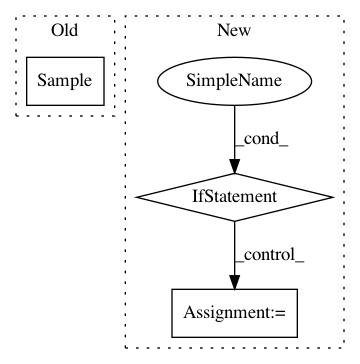

e3b5cf4b4146316f8a2d009118fab5369ebe59f6,pyprob/state.py,,sample,#Any#Any#Any#Any#,81
Before Change
if not replace:
_current_trace_previous_sample = current_sample
else:
current_sample = Sample(address, distribution, value, log_prob=0, controlled=False)
_current_trace.add_sample(current_sample, replace)
return value
After Change
if _continue_trace_at == address:
_use_previous_trace_value = False
if _use_previous_trace_value == True:
current_sample = _previous_trace_values[address]
_current_trace.add_sample(current_sample, replace)
return current_sample.value
value = distribution.sample()
if _trace_state != TraceState.NONE:
if control:
if _trace_state == TraceState.RECORD_IMPORTANCE:
// The log_prob of samples are zero for regular importance sampling (no learned proposals) as it cancels out
// log_prob = 0
log_prob = distribution.log_prob(value)
else:
log_prob = distribution.log_prob(value)
current_sample = Sample(address, distribution, value, log_prob=log_prob, controlled=True)
if _trace_state == TraceState.RECORD_USE_INFERENCE_NETWORK:
global _current_trace_previous_sample
In pattern: SUPERPATTERN
Frequency: 3
Non-data size: 3
Instances
Project Name: pyprob/pyprob
Commit Name: e3b5cf4b4146316f8a2d009118fab5369ebe59f6
Time: 2018-03-23
Author: michaeljteng@gmail.com
File Name: pyprob/state.py
Class Name:
Method Name: sample
Project Name: GoogleCloudPlatform/PerfKitBenchmarker
Commit Name: 25bd8661dd2764668d6851ffd54ad89fcb6a6cbf
Time: 2016-11-22
Author: yuyanting@google.com
File Name: perfkitbenchmarker/linux_benchmarks/blazemark_benchmark.py
Class Name:
Method Name: Run
Project Name: pyprob/pyprob
Commit Name: d3004d19c5cac8c13de9c18935c22843527f4947
Time: 2018-03-06
Author: atilimgunes.baydin@gmail.com
File Name: pyprob/state.py
Class Name:
Method Name: sample